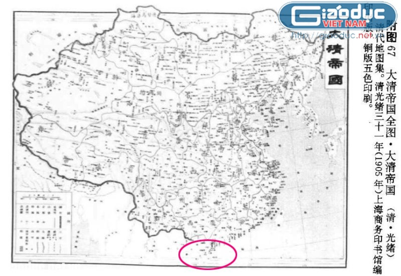

1834
1838
1905
1908
1926
1933
1935
Năm xuất bản: 1834
Đại Nam Nhất thống toàn đồ.
Ngày xuất bản: 1834
Phiên bản do Quốc sử quán triều Nguyễn ấn hành
Năm xuất bản: 1838
An Nam Đại quốc họa đồ.
Ngày xuất bản: 1838
Bản đồ do Giam mục Jean-Louis Taberd xuất bản. Bản đồ chỉ rõ vị trí địa lý chính xác của quần đảo Hoàng Sa thuộc chủ quyền của Đế quốc An Nam.
Năm xuất bản: 1838
An Nam Đại quốc họa đồ.
Ngày xuất bản: 1838
Bản đồ do TS. Nguyễn Nhã sưu tầm và sao chụp. Bản đồ do Giam mục Jean-Louis Taberd xuất bản. Bản đồ chỉ rõ vị trí địa lý chính xác của quần đảo Hoàng Sa thuộc chủ quyền của Đế quốc An Nam
Below, are other more videos...
Năm xuất bản: 1905
Đại Thanh Đế quốc.
Ngày xuất bản: 1905

“Đại Thanh đế quốc” trong sách “Thanh đại địa đồ tập”, Thanh Quang Tự tam thập nhất niên (1905), Thượng Hải Thương vụ ấn thư quán biên ấn xuất bản，vẽ cực Nam Trung Quốc đến hết Hải Nam.
Năm xuất bản: 1908
Đại Thanh Đế quốc.
Ngày xuất bản: 1908
Bản đồ “Đại Thanh đế quốc” trong sách “Đại Thanh đế quốc toàn đồ”, năm 1908 (tức Tuyên Thống nguyên niên, Thượng Hải Thương vụ ấn thư quán phát hành. Bản đồ chỉ rõ cực Nam Trung Quốc đến hết đảo Hải Nam.
Năm xuất bản: 1908
Quảng Đông.
Ngày xuất bản: 1908
Bản đồ tỉnh Quảng Đông với cực Nam là đảo Hải Nam, trong sách “Đại Thanh đế quốc toàn đồ”, năm 1908 (tức Tuyên Thống nguyên niên ), Thượng Hải Thương vụ ấn thư quán phát hành. Bản đồ chỉ rõ cực Nam Trung Quốc đến hết đảo Hải Nam.
Năm xuất bản: 1926
Trung Hoa Dân quốc toàn đồ.
Ngày xuất bản: 1926
“Trung Hoa Dân quốc toàn đồ”, trong sách “Trung Hoa tân hình thế nhất lãm đồ”của hai tác giả Thượng Ngu và Đồ Tư Thông do Thượng Hải Thế giới dư địa học xã phát hành năm 1926. Bản đồ vẽ cực Nam Trung Quốc đến tỉnh Hải Nam.
Năm xuất bản: 1933
Trung Hoa Dân quốc toàn đồ.
Ngày xuất bản: 1933
“Trung Hoa Dân quốc toàn đồ” trong sách “Trung Hoa Dân quốc phân tỉnh địa đồ sách” xuất bản năm 1933. Bản đồ chỉ rõ cực Nam Trung Quốc đến hết đảo Hải Nam.
Năm xuất bản: 1935
Trung Hoa Dân quốc toàn đồ.
Ngày xuất bản: March 8, 1933
“Trung Hoa Dân quốc toàn đồ” trong sách “Trung Hoa Dân quốc nhị thập tứ niên (1935) toàn quốc tỉnh khu”. Bản đồ chỉ rõ cực Nam Trung Quốc đến hết đảo Hải Nam.
Năm xuất bản: 1935
Trung Hoa Dân quốc toàn đồ.
Ngày xuất bản: March 8, 1933
“Trung Hoa Dân quốc toàn đồ”, trong sách “Tối tân Trung Hoa hình thế nhất lãm đồ ” in năm 1935. Bản đồ chỉ rõ cực Nam Trung Quốc đến hết đảo Hải Nam.